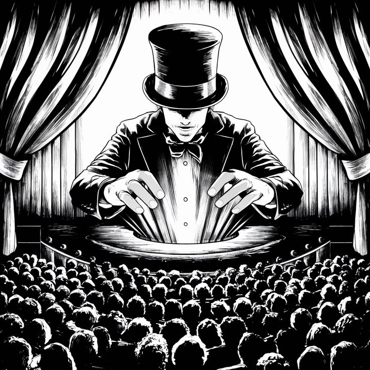

Es la rama del ilusionismo dedicada exclusivamente al uso de cartas o naipes. Es una
de las disciplinas más estudiadas y populares de la magia, donde la destreza manual, la
psicología y la manipulación de la atención permiten realizar mezclas imposibles,
apariciones, adivinaciones y cambios visuales de cartas frente a los ojos del público.
Magia con Monedas
Es la especialidad de la magia de cerca que utiliza monedas para realizar trucos de
manipulación, desaparición, multiplicación y teletransportación. Al tratarse de objetos
pequeños y cotidianos que la gente usa todos los días, genera un fuerte impacto visual y una
sensación de asombro inmediato al verlos desaparecer o transformarse en el aire.
Mentalismo

Es una disciplina de las artes escénicas en la que el ilusionista utiliza la
sugestión,
la psicología, la lectura del lenguaje corporal y el cálculo mental para simular habilidades
extraordinarias como la lectura de mente, la telequinesis, las predicciones o el control
mental.
A diferencia de la magia tradicional, el mentalismo busca crear una experiencia psicológica
profunda e intrigante.